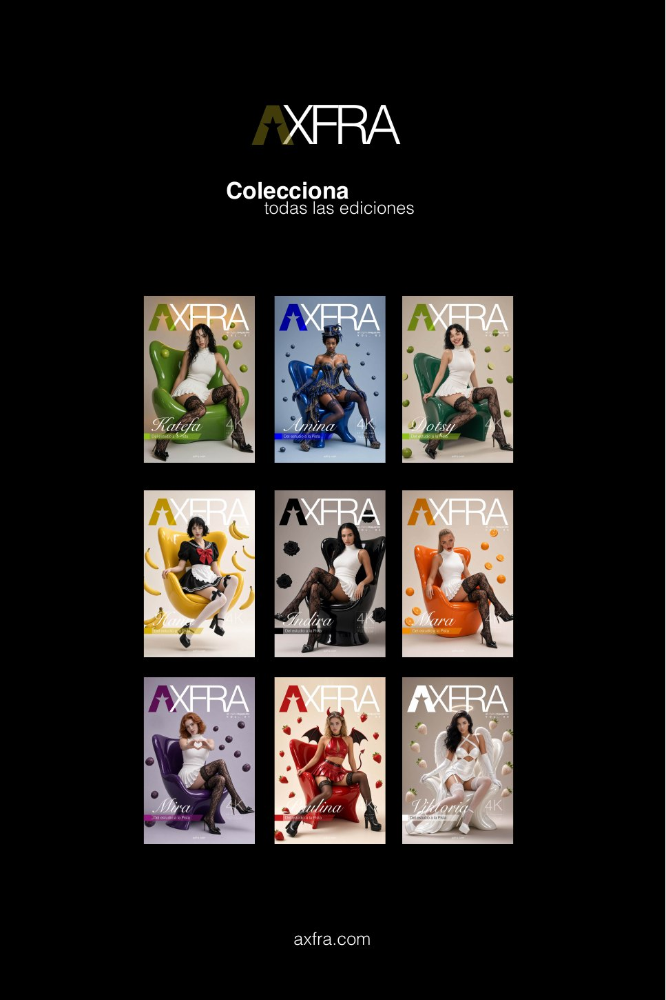

AXFRA MAGAZINE · N.º 01
Katefa
Del estudio a la pista
Moda, escenas de Chile en oficio y notas que van del pie de manzana al estrés cotidiano.
Edición digital · 42 páginas · PDF en alta resolución
Dentro del número


La colección
Nueve portadas, nueve personajes. Katefa abre la colección.

Tu marca en el próximo número
Creamos una campaña visual para tu producto, pensada para las páginas de AXFRA MAGAZINE.
Publicidad y colaboraciones